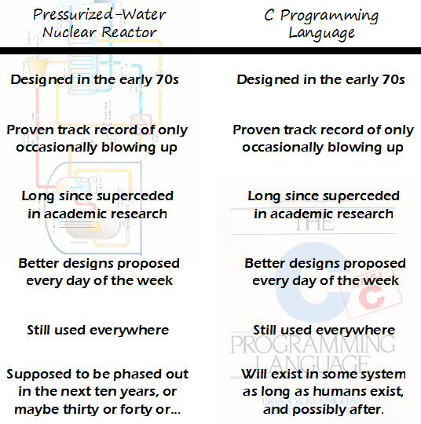

Comic JK 897
When I Feel Like It
⇤
<
?
>
⇥

⇤
<
?
>
⇥
Forum
.
RSS
.
Digg
.
Facebook
.
Reddit
.
Twitter
.
Stumbleupon
Enter your thoughts on number 897 here. Please, no spamming, trolling, coding in C or phreaking. This is dumb. People who hate on C just aren't smart enough to make effective use of it and get paid as much as a C programmer. Wait, what's better designed than C for what C does? And do please provide an answer for every day of the week for however long that bullshit has been going on. > FORTRAN >> Haha. No, that's just wrong. >>> ABAP >> Fortran's good for scientific applications, but otherwise not as flexible. > Pascal >Practically anything! > C does many things, some say that other languages are better for specific common uses of C. >> As far as I'm aware of, C is primarily used for systems programming since you have full and easy access to all low-level details required for drivers &c. Using C++, the only other language to have a useable, still used OS, is just stupid because it's like using water to put out a metal fire. > If you do require absolute control from the lowest level: Rust or ATS >> Rust isn't a good option yet. I can't wait for LFTR. Go look up the Thorium Remix 2011 (on youtube) if you're interested in the Liquid Fluoride Thorium Reactor. >Fusion will be better. Hopefully ITER succeeds soon. I was one told that human brains use C++ Hm, what superceded C in academic research? And, more importantly, why is it not used in practice? >Mathlab >microsoft office... with a couple of spaghetti-code vba macros... ( I wish I were joking... :| ) >> You must be into some truly awful research. I haven't seen anything so nasty in the papers I read. >>>well, I didn't say *I* was using spaghetti-code... how very very dare you suggest such a thing... :P ( but it is surprising just how much spaghetti-code vba is actually running important processes in both business and academic life ) >>>>I've found VBA/Excel is a nice easy way to mock up a prototype. Reasons why not to carry it into production are clearly obvious. >>It's used in production in the open source world, and a lot of colleges do it along with C++ in a CS degree It's spelled "superseded". >No it isn't >>Yes, it is. Look it up in any mainstream English dictionary. >>>Apologies. It is supersede. Now I feel silly. >>"supercede" has been around since Middle French and about 1/8 as common as "supersede". I think it qualifies as a variant spelling now. >Haskell? I can't think of many things that'd improve C. Maybe semantic imports, like python and D, and simple generics, or even just a more powerful preprocessor. > You can *almost* achieve the first bit by using tools like LZZ anyways. But another issue is the ridiculous compile times, and the fact that the standard doesn't even cover such important things as threading. >> The syntax is also needlessly ugly, eg travesties like the -> operator. And the weak typing precludes some compiler optimizations that Fortran, for example, can handle. >>>I can't think of many things that could improve C that haven't been tried without it being easier to just make a different language. Most of the things that have been tried it would have been easier (and better) to just make another language. And just look at its syntax; it's rather stupid. Yes I use it, and yes pretty much all the languages I do use have similar syntax, and yes I'm used to it, but that doesn't change the fact that a decent syntax should be possible. >> So basically C++0x before they removed concepts Nonsense, C++ is simple. To write a class you just have to write a .hpp file with the function headers and variable declarations, then a .cpp file with the function definitions (prepending ClassName:: to each one) and variable initializations, unless of course it's a Template in which case you have to write everything in the header file, and also remember that constants get initialized in the headers too. Then you wrap "#ifndef X #define X #endif" around the headers to prevent it from being included more than once (because preprocessors would get really complex if they had to remember that by themselves). Using it is even simpler: once it has been compiled, you just #include the header file, then call g++ with your file and the -I flag to indicate the include path, then do it again with the full path of every .o file you want to link, and done! Do you seriously think this could be improved? >Excellent and well done, sir. Thank you. >> Good - that's all the tips I need to write my own Firefox. > C++ != C >> +1 >> !true >>> Not true ? >>>> Syntax error: missing ';'. >>>>> Foolish human! It doesn't need a ';' >>>you mean 0? >half of this is convention. you can do it all in one file with out wrapping things in #ifndef but god help you if you fuck up your inclusion or declaration orders. also this is why I love the widely accepted but none standard #pragma once this is not a standard feature because you might want the same file read with different pre-processor state c++ is made for code reuse to the N-th degree not actual logical coherence silly people This comic is a golden fireball. Why do people keep deleting the only entertaining comments? It must suck to be that overly sensitive and dull. Every time I start a program in another language, I end up rewriting it in C++. I've recently decided to just skip the first step. > I do this too. The only times I don't use C++ are where I have to do very quick and dirty high-level things, and then I use bourne shell, egrep, sed and perl. I have no use for Java, Python or any other run-time-hand-holding performance-crippling language. >> Is Java good for anything? >>> Yes, it's like a BB gun when you don't trust kids to be responsible with a rifle. > And every time you rewrite in C++, a puppy dies. >> Stop killing puppies you monster! >>> By writing in C++ to begin with? >>>> Yes /I have no mouth but I must scream